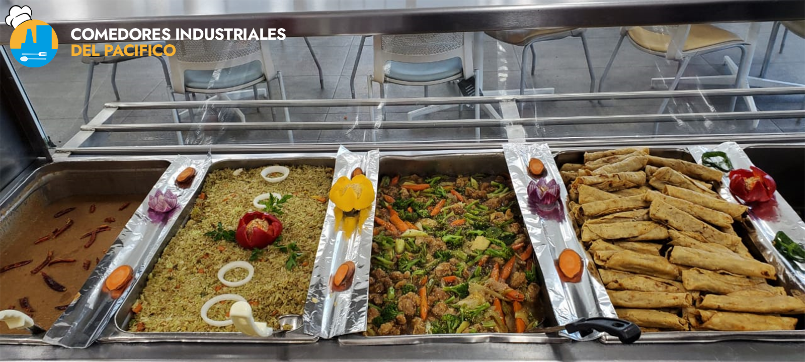
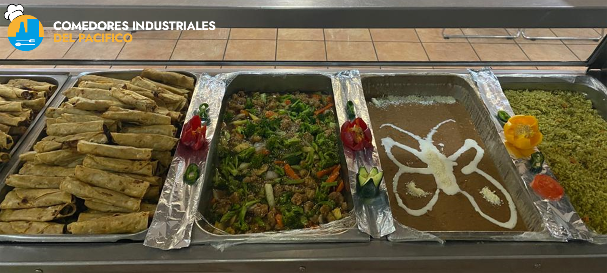
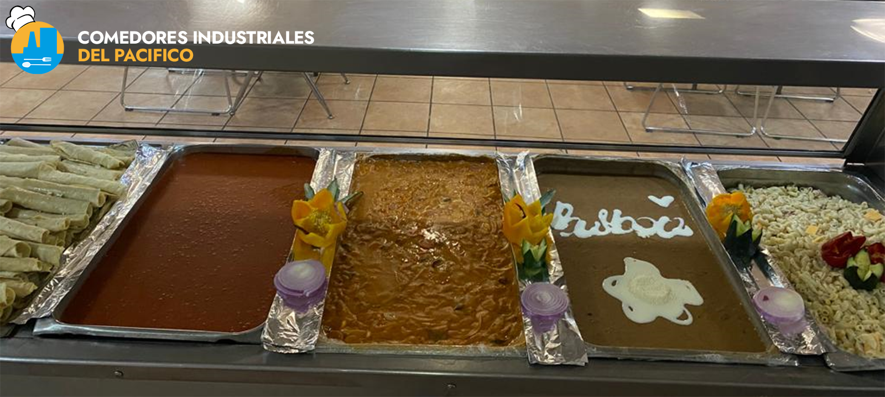
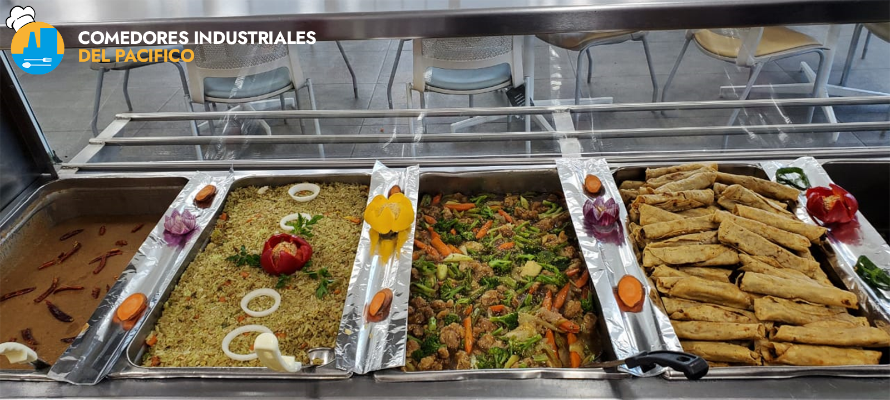
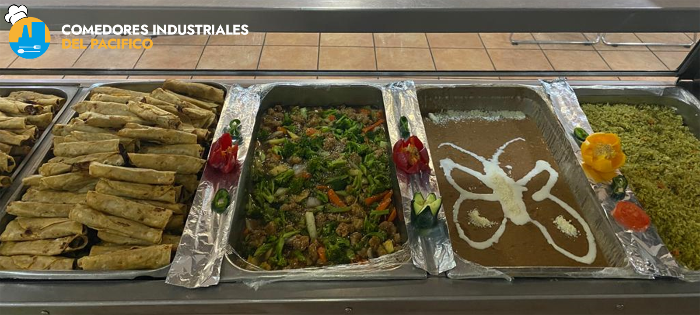
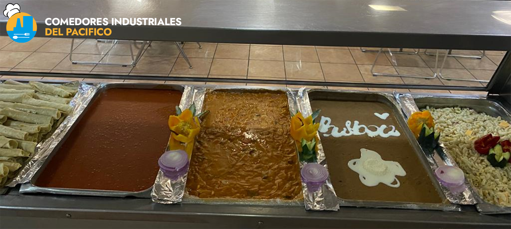

¿Qué nos hace distintos?
Es de público conocimiento que en el sector industrial existen muchas empresas que son capaces de ofrecer este servicio, pero que es lo que nos diferencia de las demás empresas que son capaces de ofertar este servicio.
Iniciaremos un poco con lo referente a los valores que nos entusiasmamos en seguir:
Responsabilidad
Todos hemos tenido alguna vez un día pesado, y lo único que deseamos es darnos un pequeño descanso, este pequeño descanso suele ser a la hora de recibir alimentación, nosotros como empresa velamos por este concepto, la hora del alimento debe de ser lo menos tediosa posible, por lo que nos esforzamos por dar siempre un servicio que sea capaz de cumplir con las expectativas del trabajador.
Empatía
Siguiendo un poco la línea de lo establecido con anterioridad, el trabajador no siempre tendrá un humor muy positivo, podrá haber tenido un día pesado, y esto lo sabemos claramente, por lo que centraremos nuestra energía en que el trabajador se sienta escuchado, pues la crítica debe de siempre ser escuchada, en este caso nosotros como empresa nos centramos bastante en este aspecto.
Respeto
Como empresa prestadora de servicios sabemos muy bien que la interacción entre trabajadores puede llegar a ser un tanto tediosa, por lo que siempre buscaremos que en todas las interacciones que tengamos con los trabajadores sea la más integra posible, para así podar paso a todos los valores mencionados anteriormente puedan desarrollarse de forma ideal.
Honestidad
Siguiendo el punto del respeto, no hay falta de respeto más grande que intentar engañar al trabajador, o tratarlo por tonto, la honestidad es uno de los valores que más nos esforzamos en mostrar a la hora de trabajar.
Ya hablamos un poco acerca de que es lo que nos hace diferentes respecto a lo moral, ahora hablaremos un poco de que es lo que nos hace diferente como empresa a la hora de hablar un poco de actividades, hemos de mencionar que no profundizaremos mucho en este, por lógicos motivos.
Higiene de siguiente nivel
La higiene es algo que todas las empresas prestadoras de servicio mencionan, sin embargo, en muchos casos estos procesos de higiene se realizan de forma informal, es decir sin ningún tipo de protocolo, nosotros como empresa hacemos que toda la limpieza se realice conforme a los protocolos de limpieza más altos relacionados con el manejo de alimentos, una de estas normas que nos centramos más en seguir es la norma mexicana 251, y los lineamientos de manejo de alimentos de la COFEPRIS.
Gran Variedad de Alimentos
Uno de las principales quejas que se tienen al respecto de los comedores industriales es la gran repetición de alimentos, en algunos casos el abuso de ciertas proteínas como pollo o pescado, al punto que el paladar de los trabajadores se abruma de este sabor, y prefieren dejar de consumir este servicio, por lo que algo que nosotros logramos es el manejo de un menú muy variado, en algunos casos este tipo de menús pueden generar inconveniencias, por el manejo de por lo menos 3 platillos por ofrecer, pero todas estas inconveniencias son cosas que planeamos manejar con el único fin de que el trabajador pueda tener una gran experiencia agradable a la hora de alimentarse.

 






Alimentación balanceada, ligera, nutritiva
En nuestro equipo de trabajo manejamos profesionales de muy alto nivel, entre estos contamos con Licenciados Especializados en Nutrición, esto nos garantiza que nuestros menús no manejen una saturación de grasas o sodios, que a la larga puedan generar malestares en los consumidores.
Por motivos lógicos es imposible medir la porción que los distintos tipos de cuerpos pueden manejar, por lo siguiente se realiza un estándar, para poder así calcular de forma correcta el aporte nutrimental que el platillo tendrá.
Personal altamente capacitado
Nosotros nos preocupamos mucho por nuestro personal, pues estos representan en prácticamente la totalidad de la empresa, pues a final de cuenta, el personal es que refleja las acciones e ideologías que la empresa busca mostrar.
Nosotros nos enfocamos demasiado en ambas partes de nuestro personal, desde el sector de la cocina, hasta el sector operativo, ambas partes cuentan con una altísima capacitación, con el fin de poder proporcionar un servicio de la mayor calidad posible.